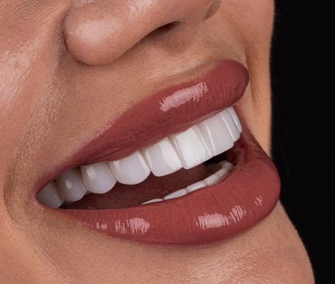

Caso Real • Lentes Cerámicos
Especialidad 01 / 03
Mínima Invasión
Lentes Cerámicos (Porcelain Veneers)
Láminas ultrafinas de cerámica diseñadas diente a diente para perfeccionar forma, color y textura superficial conservando intacto el esmalte natural.
I
Máxima Preservación Biológica
Técnica mínimamente invasiva guiada por magnificación, respetando la estructura sana dental.
II
Luminosidad y Brillo Inalterable
Porcelanas feldespáticas estratificadas con fluorescencia idéntica al diente natural con el paso del tiempo.
III
Mockup Previo & Protocolo Adhesivo
Visualización digital previa en boca antes de la cementación microscópica de precisión.